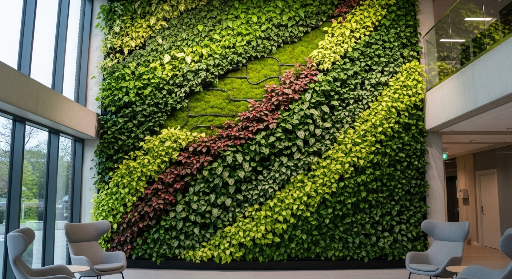
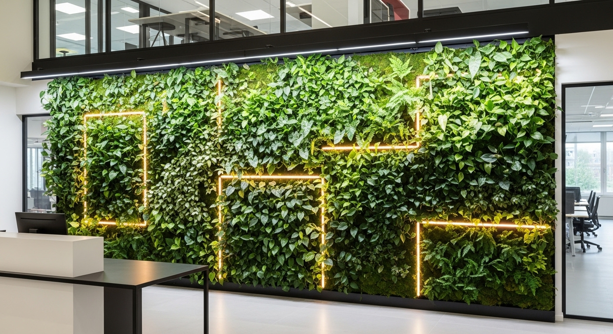

Verde Vivo
O Verde Vivo reúne projeto, implantação e cuidado contínuo para transformar áreas internas, externas e coberturas em espaços mais naturais, bonitos e viáveis de manter.
Soluções verdes conectadas ao uso do espaço


Paisagismo Residencial
Jardins para casas, varandas e áreas de convivência, desenhados a partir da rotina dos moradores, do clima local e do nível de manutenção desejado.


Telhados Verdes
Coberturas vivas planejadas com atenção à estrutura, drenagem, impermeabilização e espécies resistentes, para unir conforto, estética e uso inteligente da área.


Jardins Verticais
Paredes verdes internas e externas para trazer presença vegetal a recepções, fachadas, apartamentos e áreas comerciais, com irrigação e manutenção previstas desde o início.


Projetos Corporativos
Paisagismo para escritórios, lobbies, restaurantes e áreas comuns, criando ambientes mais acolhedores para clientes, equipes e visitantes.
Perguntas sobre Verde Vivo
Como funciona uma solução integrada de projeto, implantação e cuidado
É uma abordagem integrada. Podemos combinar projeto de jardim, jardim vertical, telhado verde, irrigação e manutenção conforme o espaço e o objetivo do cliente.
Sim. A conversa inicial ajuda a entender prioridades, orçamento, rotina de manutenção e limitações técnicas antes de definir a solução mais adequada.
Sim. O projeto pode nascer com plano de manutenção, irrigação e orientações de manejo, o que ajuda o espaço verde a se manter bonito ao longo do tempo.
Um projeto verde funciona melhor quando já nasce com cuidado previsto.